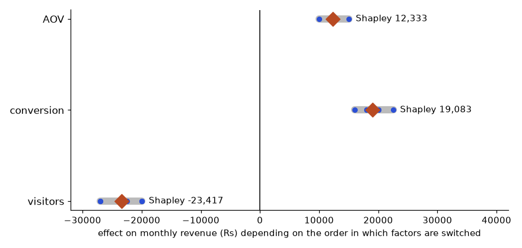

Imagine your manager walks to your desk and says, "Sales feel slow. Can you look into it?" Nobody has told you which sales, which period, slow compared to what, or what anybody will do with your answer. A weak analyst opens a spreadsheet and starts making charts. A strong analyst asks four questions, finds the one number that matters, and comes back with a recommendation. This chapter teaches you the strong way. You will learn the four kinds of analytics, the five-step process every analysis follows, and a simple trick (splitting a number into its parts) that solves a surprising share of real business questions. By the end you will be able to take a fuzzy request and turn it into a clear, answerable question. The later chapters give you the tools (Excel, pandas, Power BI). This chapter gives you the thinking that makes the tools useful.
Throughout the book we reuse one running story: an online shop in India that sells electronics, fashion, grocery and home items. You will see its orders again and again.
Words you need first
| Word | Plain meaning | Example |
|---|---|---|
| Data | Recorded facts, usually in rows and columns | One row per order |
| Metric | A number that measures something | Revenue this month |
| KPI | Key Performance Indicator: a metric the business watches closely | Monthly active users |
| Dimension | A way to slice a metric | City, category, month |
| Grain | What one row of a table represents | One row = one order line |
| Insight | A finding that changes what someone will do | "Returns are 10% in fashion, only 4% in home" |
How it works. An analysis is useful only if it ends in a decision. A chart that nobody acts on is decoration. So every piece of work you do has a decision owner (the person who will act) and a decision (what they will choose between).
Real-world mapping
| Item | Example value | Where it appears in the job |
|---|---|---|
| Decision owner | Head of Marketing | Writing the first line of every memo |
| Decision | "Keep or cut the Instagram ads budget" | Defining scope before touching data |
| Metric | Return on ad spend (ROAS) | Dashboards, weekly reviews |
| Dimension | Channel | Pivot table rows, GROUP BY |
Worked problem 1.1.1 A report says "Revenue: Rs 4,50,000". Is this an insight?
Worked problem 1.1.2 Turn "Sales feel slow" into a measurable question.
The picture
Fuzzy request ──> Sharp question ──> Data ──> Analysis ──> Decision
"Sales feel slow" "Which segment tables compare, "Pause ads in
lost revenue?" split city X"Connection to the real job. In interviews you will be given a fuzzy case ("orders dropped, why?"). The interviewer is testing whether you ask for definitions before computing. See Chapter 15.
Applications
Check yourself
| Level | Question | Typical tools | Example in the shop |
|---|---|---|---|
| Descriptive | What happened? | Dashboards, pivot tables, SQL GROUP BY | Revenue was Rs 1.0 million in 2025 |
| Diagnostic | Why did it happen? | Slicing, comparisons, funnels, tests | Revenue fell because grocery orders fell in Delhi |
| Predictive | What will happen? | Forecasts, regression, ML models | Next month's revenue is likely Rs 950,000 +/- 8% |
| Prescriptive | What should we do? | Optimisation, experiments, scenario analysis | Move Rs 2 lakh of ad budget from channel A to B |
How it works. Each level builds on the one before. You cannot explain (diagnostic) what you have not described. You cannot predict well what you do not understand. Most analyst jobs are 70% descriptive and diagnostic. Predictive work (a forecast, a model) is shared with data scientists. Prescriptive work often needs an experiment (Chapter 13).
Worked problem 1.2.1 Classify each sentence: (a) "Churn was 6% in March." (b) "Churn rose because the delivery delay grew from 2 to 5 days." (c) "At this trend, churn will be 8% in June." (d) "Offer free delivery above Rs 499 to cut churn."
Worked problem 1.2.2 Your boss asks, "Will we hit Rs 12 lakh revenue in June?" Which level is it and what do you need?
The picture
Value to business
^ prescriptive
| predictive *
| diagnostic *
| descriptive *
+-------------------------------------------> Difficulty / data neededConnection to the real job. Job titles hint at the level. "Reporting analyst" is mostly descriptive. "Business analyst" mixes descriptive and diagnostic. "Product analyst" adds experiments (prescriptive). "Data scientist" leans predictive.
Applications
Check yourself
The five steps
Steps 2 and 3 usually take more than half of the time. This is normal, not a sign you are slow.
Words you need
| Word | Plain meaning |
|---|---|
| Hypothesis | A guess you can test, e.g. "Delhi grocery orders fell" |
| Data dictionary | A document listing each column, its meaning and units |
| Source of truth | The one table or system everyone agrees is correct |
| Assumption | Something you treat as true without proof; always write it down |
Questions to ask in step 1 (the SPARC checklist, a memory aid we use here)
Worked problem 1.3.1 Run the SPARC checklist on "How are our customers doing?"
Worked problem 1.3.2 Time budget for a 10-hour analysis.
The picture
ASK ─> GET DATA ─> PREPARE ─> ANALYSE ─> COMMUNICATE
^ │
└────────── new questions arrive ────────────┘The arrow back matters. Good analysis raises new questions. That is progress, not failure.
Connection to the real job. Your first week in a new team is mostly step 2: learning where data lives, which table is the source of truth, and which columns can be trusted.
Applications
Check yourself
Formal idea. If metric M = A × B, then when A and B both change, the change in M can be split into the part due to A and the part due to B.
ΔM = (A₁ − A₀) × B₀ + A₁ × (B₁ − B₀)
effect of A effect of B(A₀, B₀ are the old values, A₁, B₁ the new.) This split is exact, with no leftover. The order of the two terms is a convention; the other order gives a slightly different split, but the same total.
Words you need. AOV = average order value = revenue / orders. ΔM means "change in M".
Worked problem 1.4.1 January: 250 orders, AOV Rs 400. February: 200 orders, AOV Rs 450. Why did revenue fall?
A deeper tree splits orders further: orders = visitors × conversion rate. Then revenue = visitors × conversion × AOV. Keep splitting until one branch explains the change.
Revenue
├── Orders
│ ├── Visitors (traffic)
│ └── Conversion rate
└── Average order value
├── Items per order
└── Price per itemWorked problem 1.4.2 January: 20,000 visitors, conversion 1.25%. February: 16,000 visitors, conversion 1.5%. Orders = visitors × conversion rate. What happened to orders and why?
The picture. Read the tree above top to bottom: each box equals the product of the boxes under it (or their sum, for additive splits such as revenue = Σ revenue by city). Walk down only the branch with the biggest change.
Connection to the real job. This is exactly how you answer "DAU dropped 10%, why?" (Chapter 15) and how a finance team does price-volume-mix analysis. Add it to every diagnostic.
Applications
Check yourself
Rules of reproducible analysis
np.random.default_rng(42)).01_clean.ipynb, 02_eda.ipynb.Which tool when
| Need | Best tool | Why |
|---|---|---|
| Fast one-off, small data, shared with non-technical people | Excel | Everyone has it, immediate |
| Repeated report from changing files | Excel Power Query or pandas | Refresh in one click or one script |
| Big data in a warehouse | SQL (separate SQL document in this series) | Data stays where it is |
| Messy data, statistics, charts in one place | pandas in a notebook | Flexible, reproducible |
| Self-service dashboards for many users | Power BI | Model, security, sharing |
| Decisions on a change | A/B test | Only randomisation proves cause |
The loop in a bank branch. The same loop appears everywhere: question (can the branch handle Friday afternoons?), data (the queue ticket log), analysis (median and 90th-percentile waiting time, customers served per hour), decision (open a second counter or not). Averages also hide the few customers who wait very long. That habit (look at distributions, not only averages) is gold in analytics.
Worked problem 1.5.1 Why is the average misleading? Ten parcel delivery times (minutes): 100, 110, 105, 95, 100, 98, 102, 108, 97, 3000.
import statistics as s; s.mean(x) gives 391.5 and s.median(x) gives 101.0.Worked problem 1.5.2 Decide the tool. A manager sends a 40 MB sales CSV each Monday and wants a summary with three charts every Monday.
Connection to the real job. Employers praise analysts whose work "can be rerun". It builds trust and saves hours.
Applications
Check yourself
Revenue = visitors × conversion rate × average order value (AOV). January: 20,000 visitors, 1.25% conversion, AOV 400. February: 16,000 visitors, 1.5% conversion, AOV 450. Revenue rose from 100,000 to 108,000. The sequential method of 1.4 switches the factors from old to new one at a time and records how much revenue moves at each switch. The trouble: which factor goes first changes the answer.
import itertools
old = {"visitors": 20000, "conversion": 0.0125, "aov": 400}
new = {"visitors": 16000, "conversion": 0.015, "aov": 450}
revenue = lambda s: s["visitors"] * s["conversion"] * s["aov"]
print("revenue old, new:", revenue(old), revenue(new), " change:", revenue(new) - revenue(old))
share = {k: 0.0 for k in old}
for order in itertools.permutations(old): # all 6 orders of switching the factors
cur = dict(old); before = revenue(cur); steps = {}
for k in order:
cur[k] = new[k]
after = revenue(cur)
gain = after - before # what switching this factor added at this point
steps[k] = round(gain); share[k] += gain / 6
before = after
print(order, steps)
print("Shapley split:", {k: round(v, 1) for k, v in share.items()}, " total:", round(sum(share.values()), 1))revenue old, new: 100000.0 108000.0 change: 8000.0
('visitors', 'conversion', 'aov') {'visitors': -20000, 'conversion': 16000, 'aov': 12000}
('visitors', 'aov', 'conversion') {'visitors': -20000, 'aov': 10000, 'conversion': 18000}
('conversion', 'visitors', 'aov') {'conversion': 20000, 'visitors': -24000, 'aov': 12000}
('conversion', 'aov', 'visitors') {'conversion': 20000, 'aov': 15000, 'visitors': -27000}
('aov', 'visitors', 'conversion') {'aov': 12500, 'visitors': -22500, 'conversion': 18000}
('aov', 'conversion', 'visitors') {'aov': 12500, 'conversion': 22500, 'visitors': -27000}
Shapley split: {'visitors': -23416.7, 'conversion': 19083.3, 'aov': 12333.3} total: 8000.0
How to read it: Each grey bar is how much the same factor seems to matter depending on where it sits in the order. Visitors range from -27,000 to -20,000; conversion from 16,000 to 22,500; AOV from 10,000 to 15,000. The diamond is the average over all six orders. The three diamonds add up to exactly +8,000, the real change.
Problem 1.6.1 Explain the February result to a manager in two sentences, using the Shapley split.
| Numbers | Traffic: -23,417. Conversion: +19,083. AOV: +12,333. Total: +8,000. |
|---|---|
| Sentence 1 | Revenue rose Rs 8,000 even though we lost 20% of our visitors, which alone cost about Rs 23,400. |
| Sentence 2 | Better conversion added about Rs 19,100 and a higher order value added about Rs 12,300. |
| Check | -23,417 + 19,083 + 12,333 = 8,000 (rounded). The Shapley split always adds to the total, whatever the number of factors. |
The Shapley split comes from game theory: give each factor the average of its marginal contribution over every possible order. With 3 factors that is 6 orders, with 4 factors 24, with 10 factors 3.6 million (then you sample orders). It is the fair split when you cannot say which factor "came first". For two factors it is the average of the two orders of Section 1.4, and for a purely multiplicative metric a quick approximation is the log-split: share of factor i = ln(new_i / old_i) / ln(new_total / old_total) × change in total.
An overall rate is an average over groups: overall conversion = Σ (share of visitors in group g) × (conversion in group g). It can change because each group's rate changed, because the mix (shares) changed, or both. Example: two devices. Desktop converts better than mobile.
| Device | Visitors Jan | Conv Jan | Visitors Feb | Conv Feb |
|---|---|---|---|---|
| Mobile | 10,000 | 1.0% | 14,000 | 1.2% |
| Desktop | 10,000 | 2.0% | 2,000 | 2.2% |
import pandas as pd
d = pd.DataFrame({"device": ["mobile", "desktop"], "v0": [10000, 10000], "c0": [0.010, 0.020],
"v1": [14000, 2000], "c1": [0.012, 0.022]})
d["s0"] = d.v0 / d.v0.sum() # share of visitors in January
d["s1"] = d.v1 / d.v1.sum() # share in February
overall0 = (d.s0 * d.c0).sum()
overall1 = (d.s1 * d.c1).sum()
rate_effect = (d.s0 * (d.c1 - d.c0)).sum() # each group's rate changed, mix held at January
mix_effect = ((d.s1 - d.s0) * d.c1).sum() # shares changed, rates at February
print("overall January:", round(overall0, 5), " February:", round(overall1, 5))
print("rate effect:", round(rate_effect, 5), " mix effect:", round(mix_effect, 5))
print("sum:", round(rate_effect + mix_effect, 5), " actual change:", round(overall1 - overall0, 5))overall January: 0.015 February: 0.01325
rate effect: 0.002 mix effect: -0.00375
sum: -0.00175 actual change: -0.00175Problem 1.6.2 Overall conversion fell from 1.5% to 1.325% although both devices improved. Is the product getting worse?
| Rate effect | Mobile +0.2 points, desktop +0.2 points, weighted by January shares of 50% each: +0.200 points. |
|---|---|
| Mix effect | Mobile share rose from 50% to 87.5% (14,000 of 16,000), and mobile converts less. Mix effect: -0.375 points. |
| Total | +0.200 − 0.375 = -0.175 points, which is 1.5% to 1.325%. |
| Answer | No. Each device got better. The overall number fell because traffic shifted to mobile (a campaign?). Report the by-device rates, and ask whether the shift in traffic is wanted. |
You only see customers who stayed, orders that were not cancelled, apps that were not removed. If staying depends on the thing you are measuring, an average over the visible rows is biased. In the simulation below, a customer's satisfaction raises both their spend and their chance of staying (the churn rule is invented, the numbers are for illustration). The analyst who looks only at customers still active after a year computes the average spend of the survivors.
import numpy as np
rng = np.random.default_rng(8)
n = 10000
satisfaction = rng.normal(0, 1, n)
spend = 100 + 15 * satisfaction + rng.normal(0, 20, n)
stays = rng.uniform(size=n) < 1 / (1 + np.exp(-(satisfaction - 0.5) * 1.5))
print("share who stay:", round(stays.mean(), 3))
print("average spend, everyone:", round(spend.mean(), 1))
print("average spend, survivors only:", round(spend[stays].mean(), 1))
print("average spend, churned:", round(spend[~stays].mean(), 1))share who stay: 0.361
average spend, everyone: 100.2
average spend, survivors only: 110.1
average spend, churned: 94.6Everyone spends 100.2 on average. Survivors look 10% better (110.1) and the churned look worse (94.6). A report of "our long-term customers spend 110" is true and misleading: it does not say that a new customer will spend 110. The analyst's defences: compare cohorts at the same age including those who left, define the population by signup (not by being active today), and ask "who is missing from this table?" before any average.
Problem 1.6.3 Weekly revenue is down 12%. Orders are down 2%, AOV is down 10%. Visitors and conversion are flat. Where do you look first?
| Split | Revenue = orders × AOV. 0.98 × 0.90 = 0.882, a fall of 11.8%, about 12%. The AOV branch explains almost all of it. |
|---|---|
| Below AOV | AOV = items per order × price per item. Check which one fell. |
| Candidates | A big discount event (lower price per item), a product mix shift towards cheap items (a mix effect), or a free-shipping threshold change (fewer items per order). |
| Data check | Before any of these, confirm refunds or currency conversion did not change how revenue is booked. |
| Answer | Look at AOV by product category and at discounts applied, not at traffic or checkout. |
| Pattern | Formula or rule |
|---|---|
| Percent change | (new − old) / old × 100 |
| Metric split | ΔM = ΔA × B₀ + A₁ × ΔB |
| Insight | number + comparison + implication |
| Question checklist | Scope, Purpose, Audience, Rules, Clock |
Problem 1 Revenue was Rs 80,000 last week and Rs 92,000 this week. What is the percent change?
Answer: (92,000 − 80,000) / 80,000 = 0.15, so +15%.
Problem 2 Classify: "Which customers are most likely to leave next month?"
Answer: Predictive.
Problem 3 Revenue = orders × AOV. March: 300 orders at Rs 500. April: 330 orders at Rs 450. Find the split of the change.
Answer: March 150,000, April 148,500, change −1,500. Orders effect = 30 × 500 = +15,000. AOV effect = 330 × (−50) = −16,500. Sum = −1,500. Order count helped, a lower AOV hurt more.
Problem 4 What is wrong with the question "Show me the best city"?
Answer: "Best" has no metric (revenue? growth? margin?), no period and no decision. Ask SPARC questions.
Problem 5 Data: 12, 14, 13, 15, 200. Compute the mean and the median.
Answer: Sum 254, mean 50.8. Sorted middle value is 14. The median (14) is typical; the mean is dragged up by 200.
Problem 6 Find the bug in the statement: "Conversion rose 20%, from 2% to 2.4%, so 20 percentage points."
Answer: The change is 0.4 percentage points, which is a 20% relative rise. Mixing percent and percentage points is a common error.
Problem 7 Visitors 10,000 → 12,000, conversion 3% → 2.5%. Did orders go up or down?
Answer: Before 300, after 12,000 × 0.025 = 300. No change in orders. Visitor effect +2,000 × 0.03 = +60, conversion effect 12,000 × (−0.005) = −60.
Problem 8 Scenario: you are asked to "improve the dashboard". What do you ask first?
Answer: Who uses it, what decision it supports, what is wrong now (slow, wrong numbers, unreadable), and how success will be measured.
Problem 9 (interview) "Orders fell 20% last week. What is your first move?"
Answer: Confirm it is real (data pipeline, duplicates, tracking change), compare to the same week last year to remove seasonality, then decompose orders into visitors × conversion and slice by channel, city and device.
Problem 10 (interview) "How do you decide what to analyse when you have a big dataset and a vague brief?"
Answer: Go back to the decision owner, agree one decision and one metric, write the question in one sentence, confirm definitions, and only then open the data.
Problem 11 Revenue = orders × AOV. Last month: 500 orders, AOV 200. This month: 450 orders, AOV 220. Split the change with the sequential method (orders first), and with the Shapley average of the two orders.
Answer: Revenue 100,000 to 99,000, change -1,000. Orders first: (450 − 500) × 200 = -10,000, then 450 × 20 = +9,000, total -1,000. AOV first: 500 × 20 = +10,000, then (450 − 500) × 220 = -11,000, total -1,000. Shapley (average): orders = (-10,000 − 11,000) / 2 = -10,500; AOV = (9,000 + 10,000) / 2 = +9,500; total -1,000.
Problem 12 Two regions. A: 100 customers, churn 10%. B: 300 customers, churn 20%. Next month the customers are A: 300, B: 100 and churn rates are unchanged. What happens to overall churn, and which effect is it?
Answer: Before: (100 × 0.10 + 300 × 0.20) / 400 = 70 / 400 = 17.5%. After: (300 × 0.10 + 100 × 0.20) / 400 = 50 / 400 = 12.5%. Rate effect is 0, so the whole 5-point improvement is a mix effect (more customers in the low-churn region). Not a retention improvement.
Problem 13 A survey of customers who completed an order shows a satisfaction of 4.6 out of 5. Why is it risky to report this as the satisfaction of all visitors?
Answer: Only completers answered. Visitors who were frustrated and left never saw the survey. This is survivorship bias; the true satisfaction of all visitors is lower. Survey a sample at the start of the visit or include abandoners.
Problem 14 Find the bug: an analyst reports the average of 30 daily conversion rates as the monthly conversion.
Answer: The mean of ratios weights a 500-visitor Sunday the same as a 5,000-visitor Friday. The monthly conversion is total orders divided by total visitors. The two can differ noticeably when volumes vary.
Problem 15 Interview: "Conversion fell from 3.0% to 2.7% but every segment improved. How can that be and what do you tell the VP?"
Answer: Mix shift. More traffic arrived in low-converting segments (for example mobile or paid social), pulling the average down. Show the rate effect and mix effect, state that product performance improved, and raise the question of whether the new traffic is worth buying.
You are my patient, practical professor. I am a working professional in India moving into data roles, and English is my second language, so use simple words. Teach me Chapter 1 topic: the four types of analytics (descriptive, diagnostic, predictive, prescriptive) and the five-step analysis process. Explain each with an everyday analogy, then with an example from an online shop. After every part, ask me one question and wait for my answer before continuing. Correct me gently and explain why.
You are my patient, practical professor. I am a working professional moving into data roles. Give me 8 graded exercises, easy to hard, on decomposing a metric into parts (for example revenue = orders × average order value, and orders = visitors × conversion). Use realistic Indian e-commerce numbers. Do not give solutions yet. After I answer, I will paste my work and you will check every step and every number.
You are my patient, practical professor. I am a working professional moving into data roles. Quiz me one question at a time on turning vague business requests into sharp analytics questions (scope, purpose, audience, rules, clock). Start with an easy request like "How are customers doing?" and make each next request harder. Give feedback after each answer and say what a strong analyst would have asked.
You are my patient, practical professor. I am a working professional moving into data roles. Review my work on this task: I was asked a vague business question and I wrote it as a sharp question, a list of metrics with definitions, and a list of assumptions. Check whether it is precise, reproducible and tied to a decision. List gaps and rewrite one weak part. My work: [PASTE HERE]
You are my patient, practical professor. I am a working professional moving into data roles. Run a mock interview with me on analytics fundamentals: types of analytics, the analysis process, why means mislead, and metric decomposition. Ask six questions one at a time, increasing in difficulty. After each answer, score me from 1 to 5, show a model answer in simple English, and tell me one thing to practise.